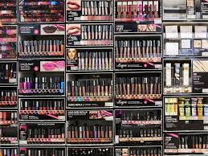
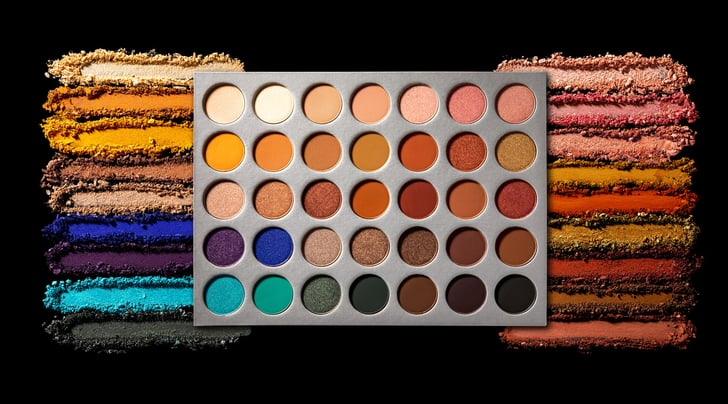
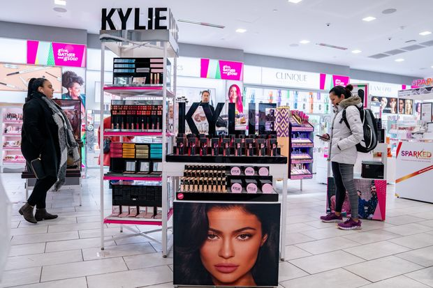

 58% of those polled admitted that department stores have lost their clout in the beauty industry. This could be due to the influx of “beauty influencers”, who spend time promoting companies to spend anywhere.
Recently I went to Ulta Beauty store in New York and asked the beauty advisor who works there "How often does Ulta have 20% off?" She responded that it could vary depending on items in store and stock amounts they have.
 She then proceeded to tell me about her obsession Kylie Jenner and how she wasn’t spending time on Snapchat anymore. To be quite frank, I did not care about anything she was talking about, so I slowly slipped away from the conversation and went about my way.
I realized Many makeup brands aren’t Cruelty-Free and 100% Vegan which is very sad, especially to a vegetarian like me. As I ventured through Ulta, I used some of the> Ulta hacks that I know will save me some serious cash because I have a bad case of being a shopaholic! Sometimes I have to tell myself
 Don’t go shopping at Ulta!"
because I end up buying the whole store, which is a problem for my wallet.